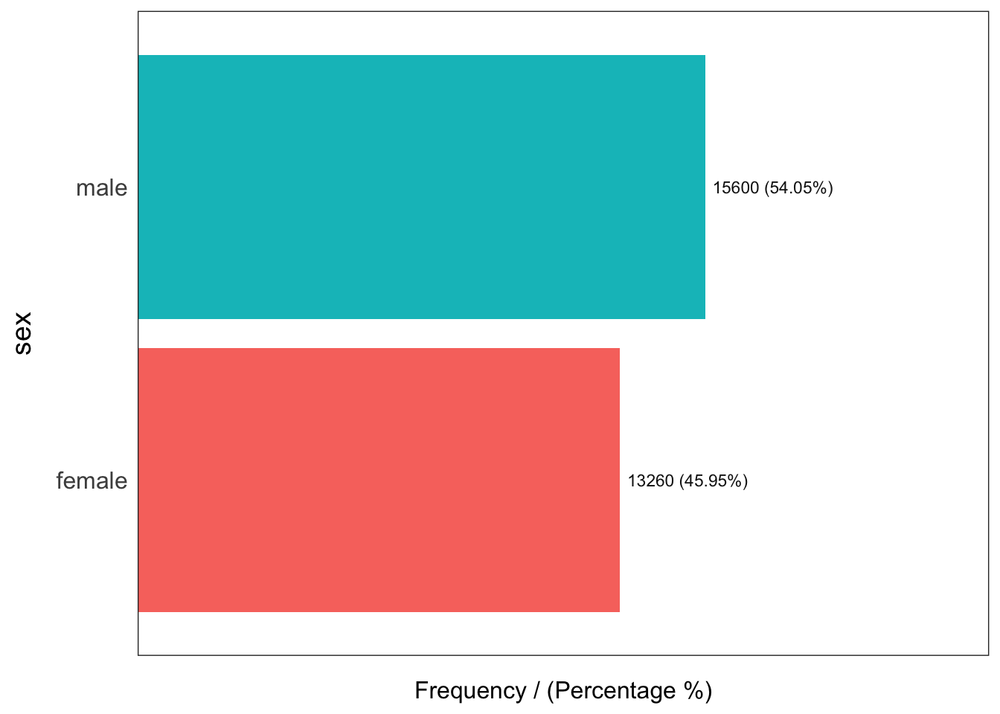
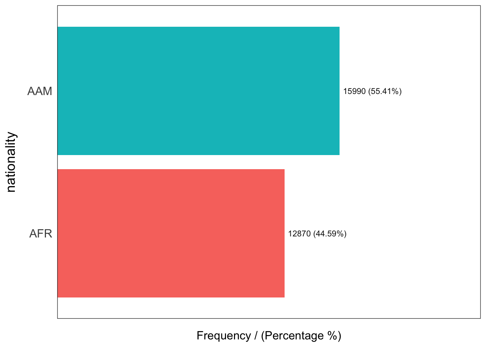
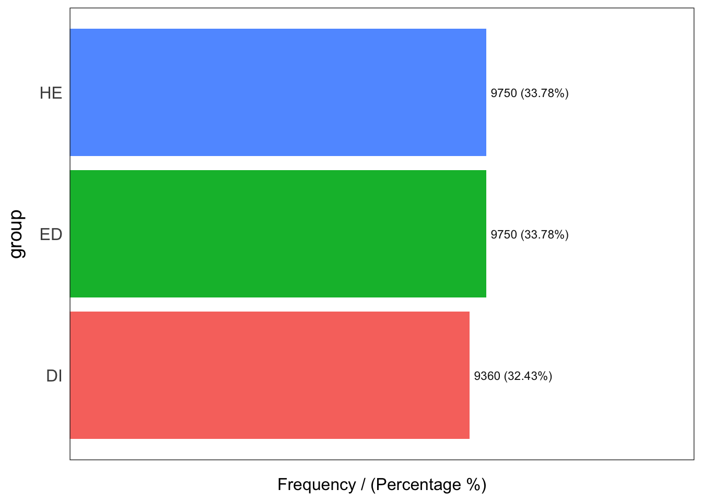
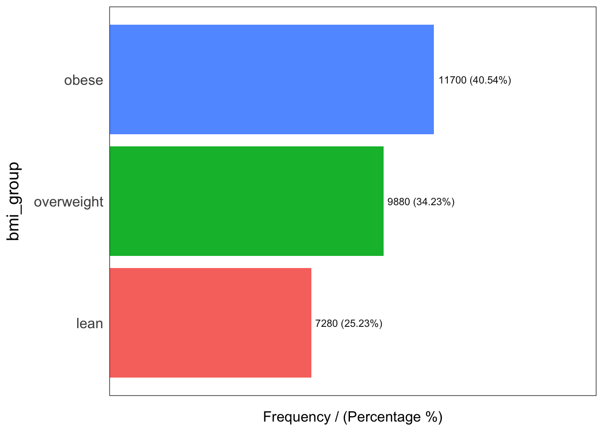

1 Explore Microbiome Data
1.1 Import microbiome demo dataset
Using dietswap from microbiome package
## Loading required package: phyloseq## Loading required package: ggplot2##
## microbiome R package (microbiome.github.com)
##
##
##
## Copyright (C) 2011-2022 Leo Lahti,
## Sudarshan Shetty et al. <microbiome.github.io>##
## Attaching package: 'microbiome'## The following object is masked from 'package:ggplot2':
##
## alpha## The following object is masked from 'package:base':
##
## transform
data("dietswap", package = "microbiome")
ps <- dietswap1.2 Create tidy dataframe
## ── Attaching core tidyverse packages ──────────────────────── tidyverse 2.0.0 ──
## ✔ dplyr 1.1.4 ✔ readr 2.1.5
## ✔ forcats 1.0.0 ✔ stringr 1.5.1
## ✔ lubridate 1.9.3 ✔ tibble 3.2.1
## ✔ purrr 1.0.2 ✔ tidyr 1.3.1
## ── Conflicts ────────────────────────────────────────── tidyverse_conflicts() ──
## ✖ microbiome::alpha() masks ggplot2::alpha()
## ✖ dplyr::filter() masks stats::filter()
## ✖ dplyr::lag() masks stats::lag()
## ℹ Use the conflicted package (<http://conflicted.r-lib.org/>) to force all conflicts to become errors
df <-dietswap %>%
phyloseq::psmelt() %>%
select(-sample) %>%
tibble::rownames_to_column("sample_id") %>%
rename_all(tolower)1.3 Find missing values
## Loading required package: Hmisc##
## Attaching package: 'Hmisc'## The following objects are masked from 'package:dplyr':
##
## src, summarize## The following objects are masked from 'package:base':
##
## format.pval, units## funModeling v.1.9.4 :)
## Examples and tutorials at livebook.datascienceheroes.com
## / Now in Spanish: librovivodecienciadedatos.ai##
## Attaching package: 'funModeling'## The following object is masked from 'package:phyloseq':
##
## get_sample
df_status(df, print_results = FALSE) %>%
select(variable, type, unique, p_zeros) %>% tibble::tibble()## # A tibble: 14 × 4
## variable type unique p_zeros
## <chr> <chr> <int> <dbl>
## 1 sample_id character 28860 0
## 2 otu character 130 0
## 3 sample character 222 0
## 4 abundance numeric 1268 20.6
## 5 subject factor 38 0
## 6 sex factor 2 0
## 7 nationality factor 2 0
## 8 group factor 3 0
## 9 timepoint integer 6 0
## 10 timepoint.within.group integer 2 0
## 11 bmi_group factor 3 0
## 12 phylum character 8 0
## 13 family character 22 0
## 14 genus character 130 01.4 Distributions for categoric variables
## Warning: The `<scale>` argument of `guides()` cannot be `FALSE`. Use "none" instead as
## of ggplot2 3.3.4.
## ℹ The deprecated feature was likely used in the funModeling package.
## Please report the issue at <https://github.com/pablo14/funModeling/issues>.
## This warning is displayed once every 8 hours.
## Call `lifecycle::last_lifecycle_warnings()` to see where this warning was
## generated.
## sex frequency percentage cumulative_perc
## 1 male 15600 54.05 54.05
## 2 female 13260 45.95 100.00
## nationality frequency percentage cumulative_perc
## 1 AAM 15990 55.41 55.41
## 2 AFR 12870 44.59 100.00
## group frequency percentage cumulative_perc
## 1 ED 9750 33.78 33.78
## 2 HE 9750 33.78 67.56
## 3 DI 9360 32.43 100.00
## bmi_group frequency percentage cumulative_perc
## 1 obese 11700 40.54 40.54
## 2 overweight 9880 34.23 74.77
## 3 lean 7280 25.23 100.00## [1] "Variables processed: sex, nationality, group, bmi_group"